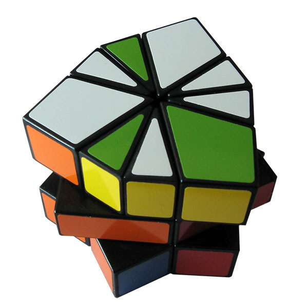
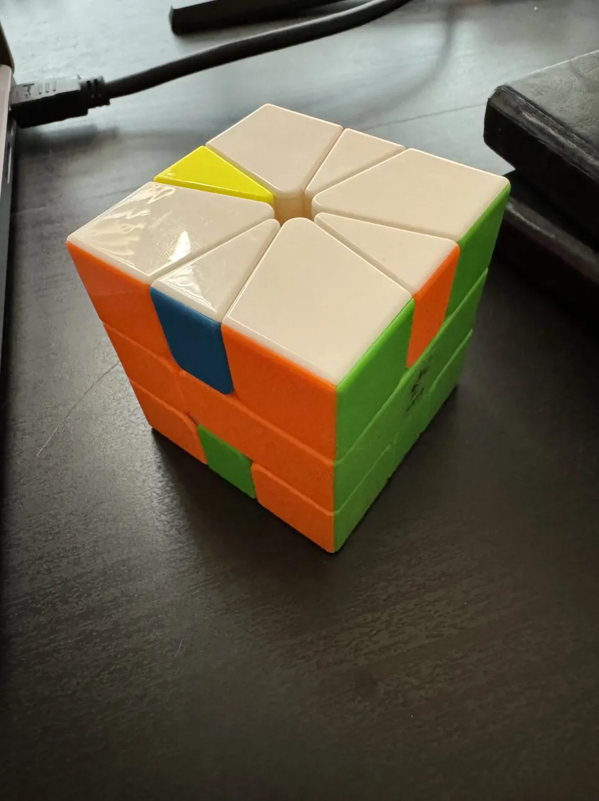
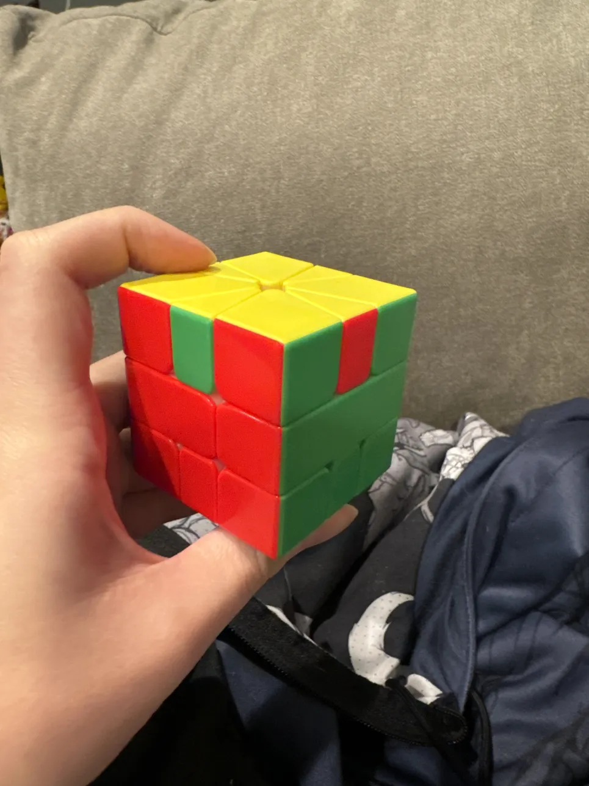
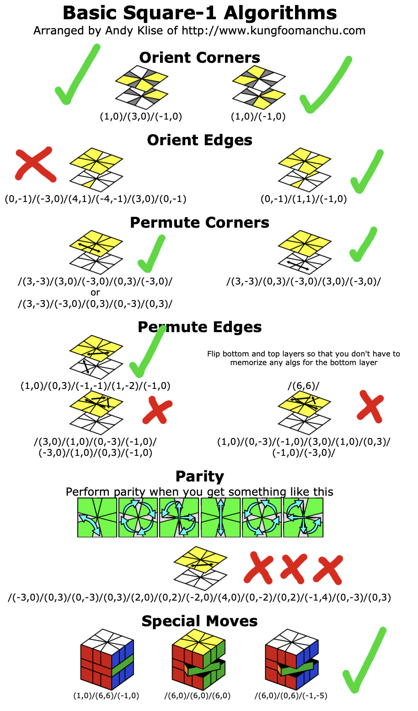

Square-1
Table of Contents
Notes on Humility (Solving a Square-1)
My recent stint memorizing things led me back to my other old hobby: speedsolving Rubik's cubes – doing research into the 3x3 blindfolded event led me back to the greater speedcubing content sphere, which got me generally interested in the old twisty puzzles again. After watching J Perm's video attempting to solve a Puppet Cube without looking up algorithms, I got it in my head that it would be really fun to do this with the Square-1. Armed with some low-level speedsolving knowledge, I was unreasonably confident at my probability of success. I spent the next six days being tortured by this small children's toy.

Day 1 - Make moves until you learn something
I got the cube in the mail, scrambled it up, sat on the couch, and made random turns until I noticed something interesting.
The first useful thing I noticed was that there is only one axis of rotation from the top and bottom of the puzzle, which means that everything must be done with moving things up and down from those two layers.
Likewise, I noticed quickly that I could easily flip the orientation of the center pieces without disturbing the top and bottom rows1. This was really useful: it meant that throughout the duration of solving this puzzle that I could completely ignore the middle row pieces, since no matter what I could fix whatever any sequence of moves did to the center pieces.
Most of this day was spent realizing that I could not gain that much ground in terms of learning useful move sequences unless the shape of the cube was predictable in the before and after states of the turns. As a result, I thought it would be the most convenient if I could get the puzzle into it's original "cube" shape, and then look into things which I could do which would leave the cube in a cube state after doing this. Getting the cube into this shape was pretty hard: I did it mostly intuitively, and it involved a lot of random turns when I wasn't sure what to do.
I did eventually get there, though! And from there it was off to the races. I knew if I tilted one layer the width of a small piece and did a slice, the top and bottom layers would still be squares. Nice! What I did from here was try to pair up as many corner pieces + edge pieces as I could. In my head I was trying to do this as a sort of "blockbuilding" step, where I tried to make it similar to the F2L step of a 3x32.
Not having explicit algs (or much understanding) made this step pretty confusing. I kept accidentally destroying the paired up pieces I had already made, and I didn't yet have the "insertion" intution for placing corners in a particular layer. But somehow through trial and error I made it to the below, where I intuitively blockbuilt my way to fully solved corners and four edges needing to be flipped.
This is going great! I'm totally going to solve this soon! I called it a day for today.

Remaining: Last 4 edges flip
Day 2 - Sometimes two different things are really the same problem.
I initially started feeling fear of screwing up my largely fortuitious progress by making some stupid turns, so day 2 I made a lot of conservative, reversable move sequences so I wouldn't screw things up too much.
I didn't end up making that much progress this day, but I did manage to somehow convert the above into a case with two edges requiring swap and two corners requiring a twist. Now I had two ways I could solve it: figuring out a 2 edge swap + 2 corner twist, or a particular four edge swap. I don't think, looking back, that this was that much progress: I had merely discovered that basic puzzle-solving idea of \(f^-1(g(f(x)))\), where you set up to some different case, solve that, and then un-set up that case3. I was still pretty confident I could do this!
Remaining: Two edge swap, two edges twist
Day 3 - Once you get there once, you can get there again
One thing I resolved to do today was to try some weirder moves and risk screwing up my progress in exchange for learning something new. My thought was: maybe it's just luck that I got this far, but if I got this far by luck then I can get this far with luck again.
I did, indeed, screw up my progress. But I did learn some interesting things, so it was worth it. Specifically, I had a vague, unclear sense of what I was supposed to do to orient the corner pieces. To say "I learned a corner orientation algorithm" would definitely be overselling what was actually happening on day 3, but I learned where you needed to put the corner piece in order to twist it during a slice move, and things kind of happened on their own from there.
At the end of this day, I arrived at the following case:

This is crazy! Just two pieces left! Maybe there is a simple algorithm I can use to directly solve the cube from here! I was filled with confidence that this was actually happening, and I would succeed soon.
Remaining: Two edge swap
Day 5 - 92 is halfway to 99
I played around with edge flips at this point, and relatively quickly found a pretty simple three mover which would orient the top and bottom four pieces4, and that it could be paired with 180 degree rotations to permute them also5. I wasn't sure how it would be possible to solve two edges this way, but I messed around with this paired with setup moves just in case there was some way I could make it work.
After messing with this for a few hours, I started to suspect that the last two edges being flipped was a parity case. If that were the case, I was likely completely fucked. I thought back to my time in childhood playing Runescape, about how leveling skills starts out very easy, and then the gap between levels slowly starts to grow. I remember the common maxim: "92 is halfway to 99", referring to the amount of total experience to reach the maximum level at a skill.
In my case, it was more like "97 is halfway to 99". I literally had two pieces to flip on the entire puzzle, and I couldn't do it. I wrote in my journal: "This god damn thing has defeated me. I pray when this is over that this is a complicated parity case and not a simple two edge swap algorithm I am just missing because I am stupid. It has been days." I was in despair.
Remaining: Two edges swap
Day 6 - Sometimes you have to Concede
I spent about four hours today scrambling the puzzle back into a scrambled state, and then trying to fight my way back to the same spot as before in hopes that I would randomly skip the parity case. I had a sense that parity had something to do with the rare case where I would slice a layer with an odd number of edge pieces, but I could not keep track of this enough during my scrambles, and three separate times arrived right back at a parity case I had encountered before.
I learned a lot more about the cube in this effort: I figured out an algorithm which would 3 cycle corners on the top face and swap corners on the bottom face6, and I used this to reasonably quickly get back to oriented edges, and used the same edge swap from yesterday to solve as many edges as I could. I still had a little bit of difficulty getting the puzzle into a cube shape quickly, I had no idea how to fix parity7, and none of my scrambles seemed to let me get lucky and avoid it.
I also started to realize: if I can't solve parity, and I claim to solve the puzzle, isn't that sort of lame? If I can't solve a 3x3 without a PLL skip, can I really claim to be able to solve it? After being stuck on this for a double-digit number of hours, I finally cracked and looked up to see if it was a parity case (it was) and to see if it was hard to independently find (it was).
I applied the algorithm to my puzzle and then the cube was solved. Back to Square One indeed8.
Conclusion
At the end of the day, despite all my posturing otherwise, I am more of a wordcel, rather than a shape rotator. Much of my life has been spent running from this fact, by spending lots of time valiantly struggling with rotation instead of leaning into straightforward word-using which comes relatively naturally to me.
Nonetheless, I was fairly happy with how I did on this little challenge. By the end of day 6 I had a pretty consistent strategy of:
- Get the cube shape
- Orient corners
- Permute corners
- Swap as many edges as possible using setup moves and 4-edge swaps
which was pretty good overall despite it's incompleteness, not too different from the actual beginner method for solving a square-1:

There are some worlds where this strategy probably could solve some Square-1 scrambles, even if I never figured out edge 3-cycles, orienting 1 edge on both faces, or how to fix parity. In some other world I get lucky9 on the first try, and this blog post reads very differently.
In general I have resolved to start doing things like this more – I think a lot of people see ground that has been covered by other people, and conclude that they could have easily invented or discovered all of those things easily. I see this a lot with math especially, but I often see it in places like programming or competitive gaming as well. A lot of "learning" that gets done these days is akin to being handed a Square-1, a list of algorithms, and being asked to "solve" it.
That's not much of a puzzle, really! The real puzzle is coming up with the algorithms.
In the future I'm going to be more mindful of things that feel like puzzles, and things that feel like algorithms sheets. There's a lesson to be found in here about humility, and about appreciating that we can focus on unsolved problems by leaning on ground already covered by others. I'm telling myself that this insight was worth staring at a two-edge swap case for three straight days.
Footnotes:
/(6,0)/(6,0)/(6,0)
In hindsight I think this was complete nonsense, but it was a reasonable thing to try to do given that I had no clue what I was doing.
Something something change of basis, something something linear algebra.
(0,-1)/(1,1)/(-1,0)
(1,0)/(5,-1)/(-5,1)/(5,0)
(0,-1)/(3,0)/(-3,0)/(3,0)/(-3,0)/
This isn't exactly true: I had a feeling it was related to the weird case of swapping an odd number of edge pieces with a slice, like if you had three kite pieces in the slice. instead of the usual 2 edge 2 kite cases. I couldn't figure out how to leverage this fact during the scrambles, though.
This is the original, full name of the puzzle. Fitting.
This would be very unlike me.